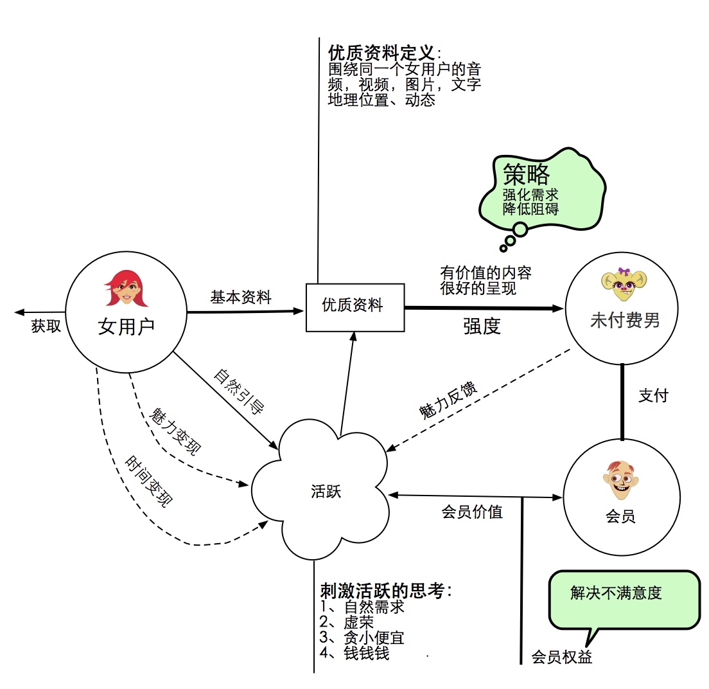
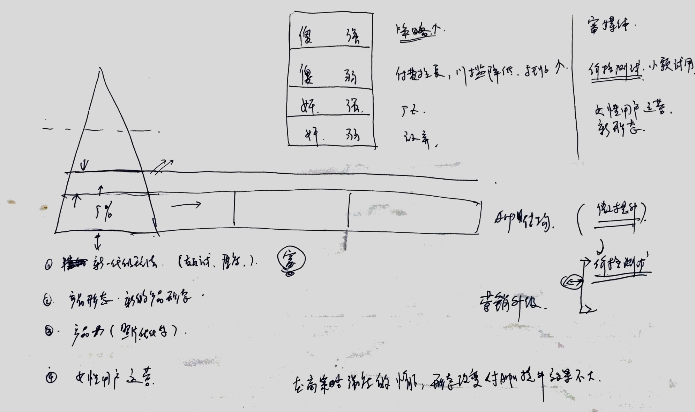
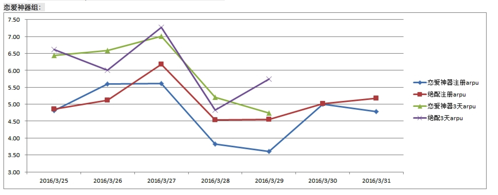
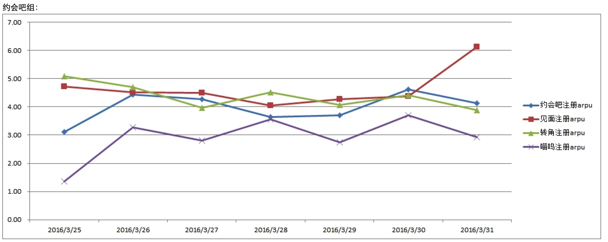
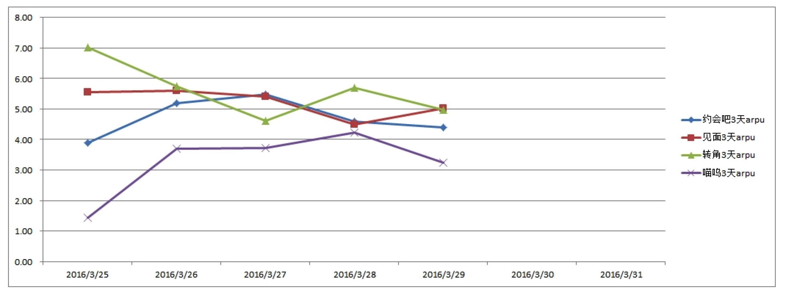
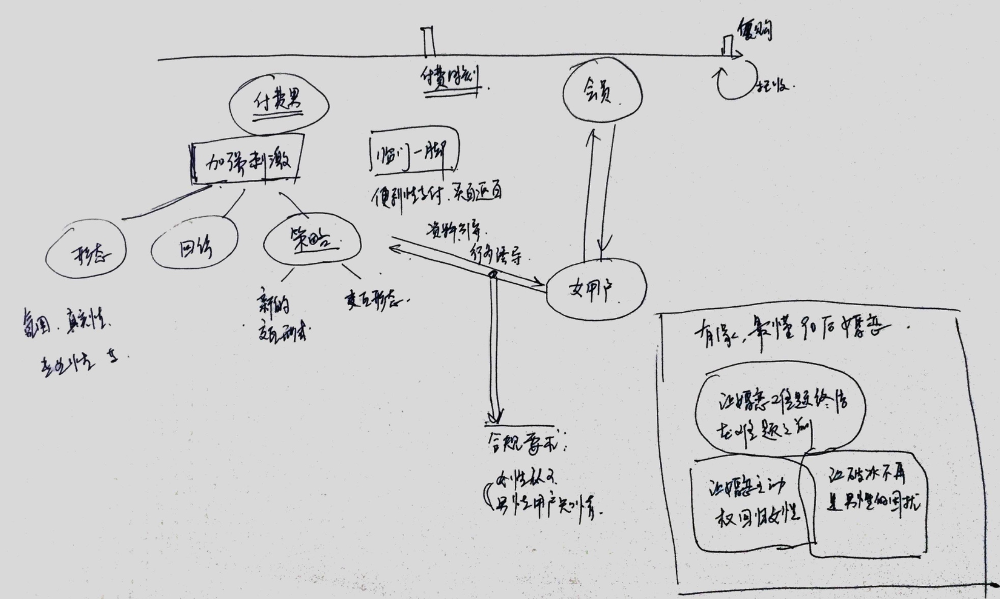
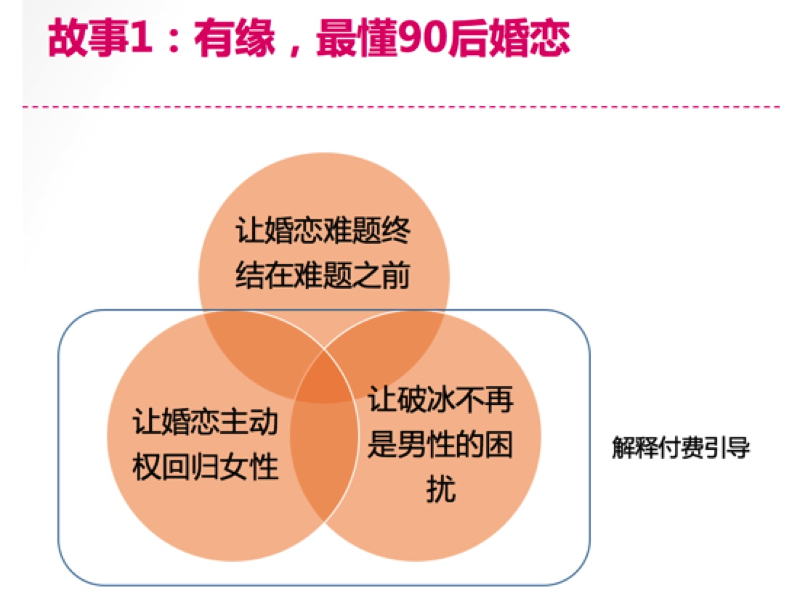

无限互联网企业的趋势
1、 大品类 低频 高毛利
2、 品牌打法
3、 业务（故事）同资本结合
多产品考试会议
1、刘颖慧考试环境说明，投出数据情况
2、王楠讲诉对照组的数据提升情况
3、杨华，文涛，严欣 分别讲述一下产品情况及数据分析
4、纪磊、广至、远炜 分别说说使用感受
5、讨论为何没有达到当初的目标： 产品形态提升为何没有大幅度提升arpu！ 原因是什么？？？能输出什么结论，提供什么借鉴经验



假设： 在特定的用户人群中，不同产品形态的产品能够对比多名称，可提升arpu 50%以上。
结论：
数据上并没有证明假设，执行层面存在着瑕疵。
更深的刺激；
聊天的可能性 还是 约会的可能性
多产品的测试并没有支持
产品的三个层次
- 基础产品定位 （大众，低成本，售卖可能性）
- 产品结构 （体验历程， 还有match.com给会员陆续展示的机会 ）
- 交互&表现&支付
第一，第二 是没有问题的，没有竞品可以替代
目前的主要问题，还是策略层的交互形式粗暴单一（没有代入感，循序渐进），真实性。
如何加强信赖感、真实感
产品思考的初步结论
从周六的接受了产品方向的任务以来，一直觉得重担在身，压力山大。本周主要是对有缘网产品进行体验，思考和各种讨论，不知道理解是否正确，写出来，让大家讨论讨论，拍拍砖。
1、 从产品的基础的『大众，低成本，售卖可能性』定位，这个已经达成共识，目前在市场上是领先的；
2、 产品结构，即提供给消费者的体验历程，通过策略引导逐步加强刺激诱发想象空间，推动用户越过付费门槛成为会员，然后进行实质性的交友过程。这是个蛮传统的商业结构，友缘策略应用能抓住荷尔蒙用户最核心的痒痒肉，如果能合规，这种策略方式在市场中也是最先进的。
3、交互表现层，这一块是被吐槽最多，产品表现脱离主流趋势，用户不能形成第一眼信赖；交互形式没有代入感，粗暴单一无下限（在信的数量、深度、内容上不断下猛药），稍有智商会质疑真实性，最终只搞定『智商最傻需求最强』的用户。用户被市场不断教育，产品的停滞不前，核心用户群已经在渐渐远离，这个是我认为的产品最核心短板。
如果1和2都不是主要问题，对3的改进本质就是营销升级，远炜提供了一个模型，通过对用户的分类进行不同的营销策略，形成全面的营销升级的思考，如下：
| 用户 | 需求 | 策略 | 方向 | 项目 |
|---|---|---|---|---|
| 傻 | 强 | 既有客户，挖潜 | 继续深化策略 | 富媒体，涨价，唤醒进行多次托收 |
| 傻 | 弱 | 摇摆客户，唤醒 | 降低门槛，付费拉长 | 低成本体验，召回，临门一脚的促销，托收跟上 |
| 奸 | 强 | 新兴客户，争取 | 提升信赖感，策略真实性 | 产品力提升，交互方式升级，付费前用户的诱饵质量 |
| 奸 | 弱 | 放弃 |
压力山大，不知道是否方向正确，希望大家能就这个发表一下各自的看法。
市场发声正面压过负面，合理的故事包装
至产品各leader信 （王楠、广志、杨华、文涛、严欣、程远炜）
资源情况： 产品研发部 2组，开发一部，开发2部，意识融通，AD组，支付组
各位，继周二的产品方向讨论会以后，各组已经了解到友缘产品在市场上的严峻形势，市场已经倒逼咱们不得不做出改变的时候了，我先画个框，希望大家在这个框架下思考，拿出可行的产品方向来。
我从以下三个层面进行了思考：
1、 产品基础定位：『大众，低成本，售卖可能性』，这个已经达成共识，目前在市场上是领先的；
2、 产品结构，即提供用户的体验历程，通过策略引导逐步加强刺激诱发想象空间，推动用户越过付费门槛成为会员，然后进行实质性的交友过程。这是传统的商业结构，个人感觉，友缘对策略应用基本抓住了『为交友可能性买单』的最强推力，如果能合规，这种策略方式在市场中也是最先进的。
3、交互表现层，这一块是被吐槽最多，产品表现脱离主流趋势，用户不能形成第一眼信赖；交互形式没有代入感，粗暴单一无下限（在信的数量、深度、内容上不断下猛药），稍有智商会质疑真实性，最终只搞定『认知能力低需求旺盛』的用户。用户被市场不断教育，产品的停滞不前将使得核心用户群渐渐远离，这个是我认为的产品最核心短板。
一句话概括：产品定位结构没有问题，营销打法需要跟上时代，用消费者的玩法来提供友缘的服务。
下面是一个简单的模型，将用户分为四个核心人群，我分别提出了营销策略：
| 用户认知 | 用户需求 | 代号 | 策略 |
|---|---|---|---|
| 弱 | 强 | A（既有客户） | 挖潜 |
| 弱 | 弱 | B（摇摆客户） | 唤醒 |
| 强 | 强 | C（新兴客户） | 全力争取 |
| 强 | 弱 | D（友军客户） | 暂时搁置 |
各位组织部门在此框架下对ABC三块进行讨论拿出靠谱方向来，为接下来打仗定好方向。
至公开信
2016年第一季度马上就要结束了，在第一季度商业化中心基本完成K值提升的KPI指标，有的部门甚至超额完成目标，在第一季度大家的努力和成果还是值得肯定的，但随着市场竞争的加剧以及渠道的快速变化，产品部门原有的工作流程、方式和方法论，已经不能及时的响应商务部门的需求，不能够适应市场的快速变化了，产品部门的工作成果未能体现出对公司收入、毛利的提升效果，因此明确产品如何才能跟随商务及市场变化和需求的节奏、紧跟时代潮流，真正成为公司建立核心市场竞争力的有力推手，是商业化中心亟需思考和明确的问题，这就需要找到打开产品空间的思路、方式，明确产品方向和后续规划。
大家可以结合下面的几个问题进行思考，下面的问题只是例子，大家可以不局限于自己所做的工作，可以从不同的视角或角色进行思考，可以从产品的角度、产品经理的角度，从商业化中心或公司业务发展宏观的层面等等进行思考和设想。
思考:
1、自己现在正在做的事项，能够为公司在产品方面的进一步发展，拓展更大的发展空间吗？为什么呢？
2、如果你就是公司产品的负责人，那么对下面的问题如何理解和解决呢？
A、公司的产品解决了用户的哪些痛点，我们的产品对于用户的价值是什么？本质是什么？我们满足用户的需求了吗？
B、目前公司产品的问题在哪里？是什么束缚了公司产品的发展，当前我们的瓶颈在哪里？那么我们该如何提升产品的竞争力，适应市场的快速变化呢？
C、如果要让公司的产品实现质的飞跃，你会从哪几个方向入手呢？为什么？


女性用户
首先 气氛 + 可玩性
基本需求： 找到人
直播： 魅力变现 + 时间变现
社交1.5 美丽约
直播 社交2.0
女性收到钱 找到存在感
供给资料 ： 资料内容 + 数量